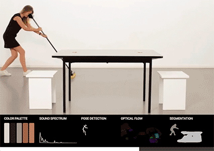

Prepro
A video pre-processing pipeline for ECAL Creative Coding Course 2017-2018.
Getting started:
- Prepro Pipeline - Process your videos directly from this website
- Prepro.js Examples - Some examples using prepro.js
- Prepro.js Documentation - Reference doc of prepro.js
Github:
- Prepro.js - The javascript library
- Prepro CLI - A command line interface to run the pipeline locally
- Prepro Services - The Services used by the pipeline
- Prepro Web - This website